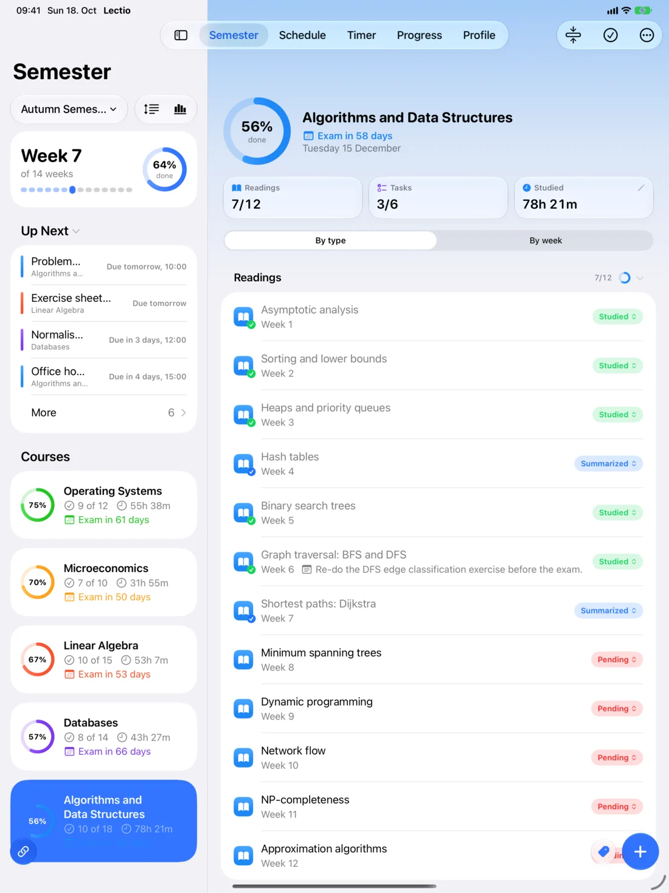
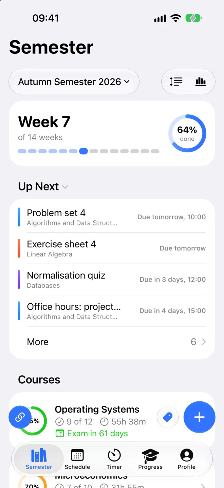
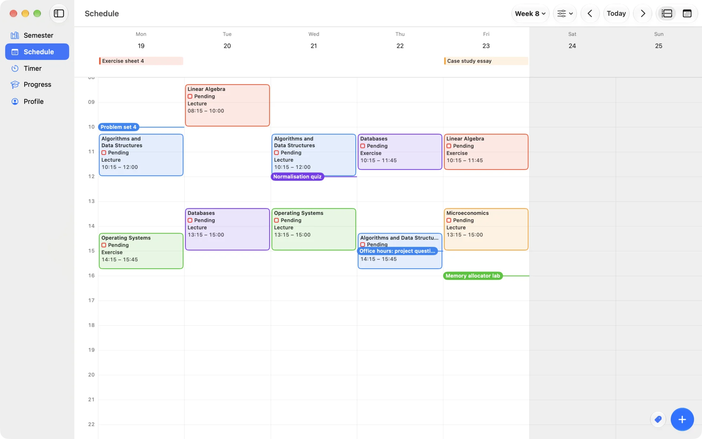
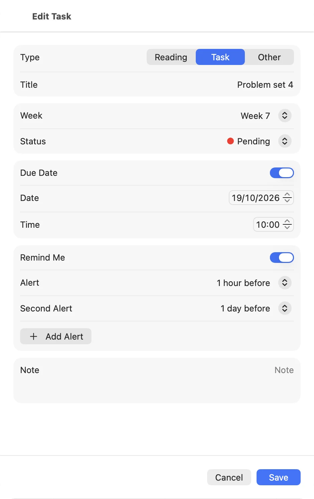
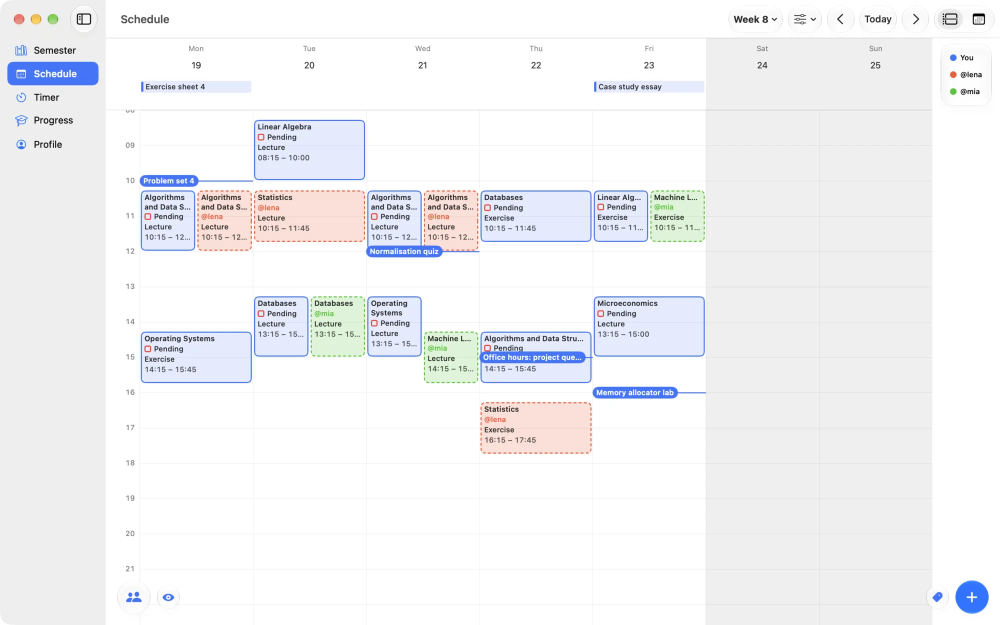
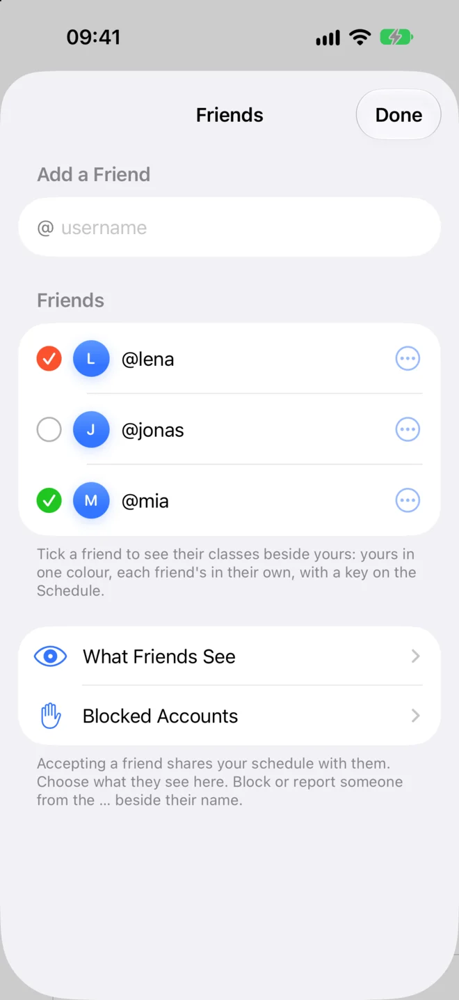
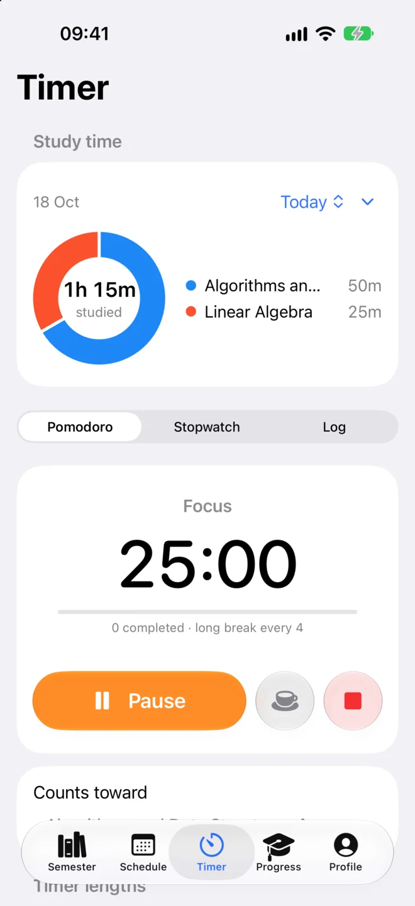
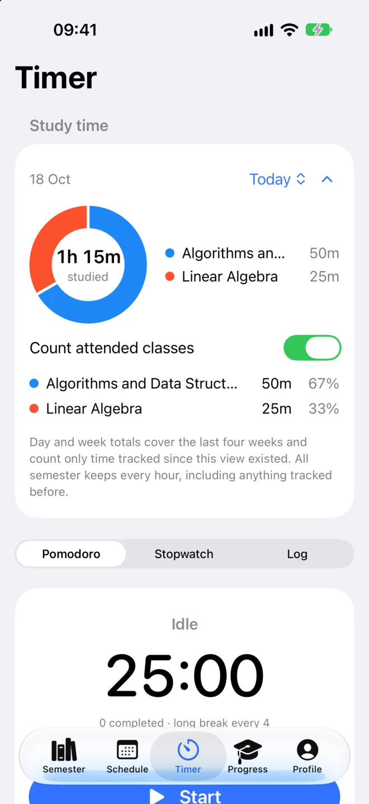
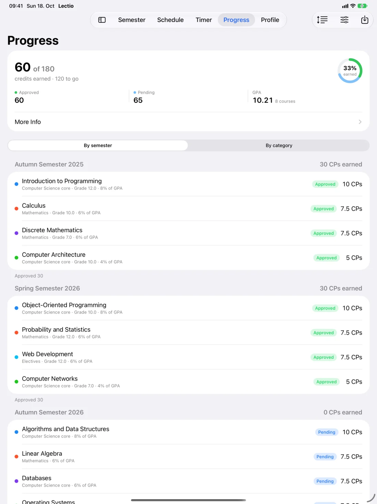
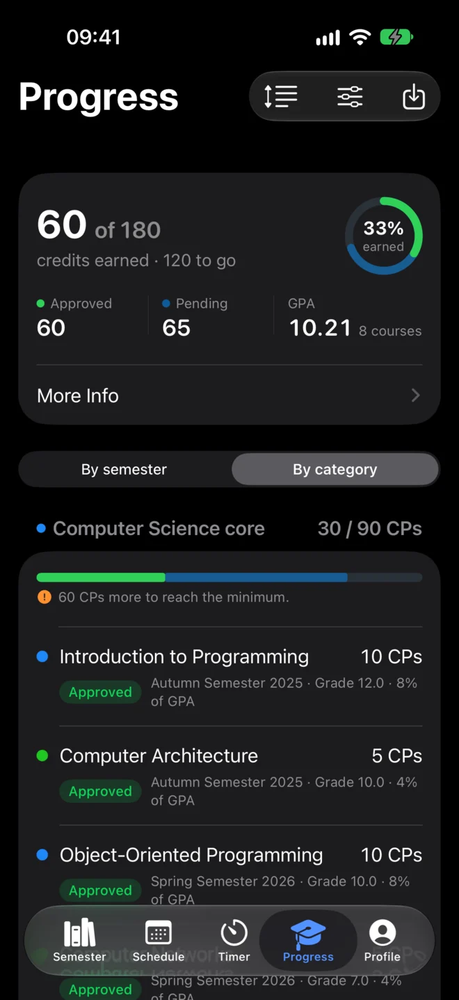

Plan
Every reading.
Every task.
Fill each week, tag what you have done and watch every course come together.


Schedule
Your week at a glance.
Lectures, exercises and exams on one timetable, with every deadline on the day it's due.

Reminders
Never miss
a deadline.
Give a task a due time and up to five alerts, then mark it done straight from the notification.

Friends
See when your friends
are in class.
Add friends by username and show their timetables next to yours. You choose what they see of yours.


Timer
Focus. Then see
where the time went.
Pomodoro, stopwatch or a manual log, counted toward each course along with the classes you attend.


Progress
Credits and GPA,
every semester.
Your grades and credits across the whole degree, with a GPA worked out by your university's rules.


Import
Bring your semester in.
-
Moodle
Link your Moodle courses and Lectio checks them for new material each time it opens. You pick what to add.
-
Your timetable
Open the .ics file from your university's portal or a calendar app, and each class lands on your schedule with its course.
-
TUCaN
At TU Darmstadt? Bring your grades, credits and areas into Progress, and check every change before it's saved.
And a little more.
- Widgets
- Live Activity
- Siri & Shortcuts
- Menu bar timer
- Handoff
- Sync or stay offline
- Dark mode
- Pomodoro alarm
- Vacations
- Shared tags
- Add to Calendar
- Guided tour
Lectio
Free for Mac, iPhone and iPad.